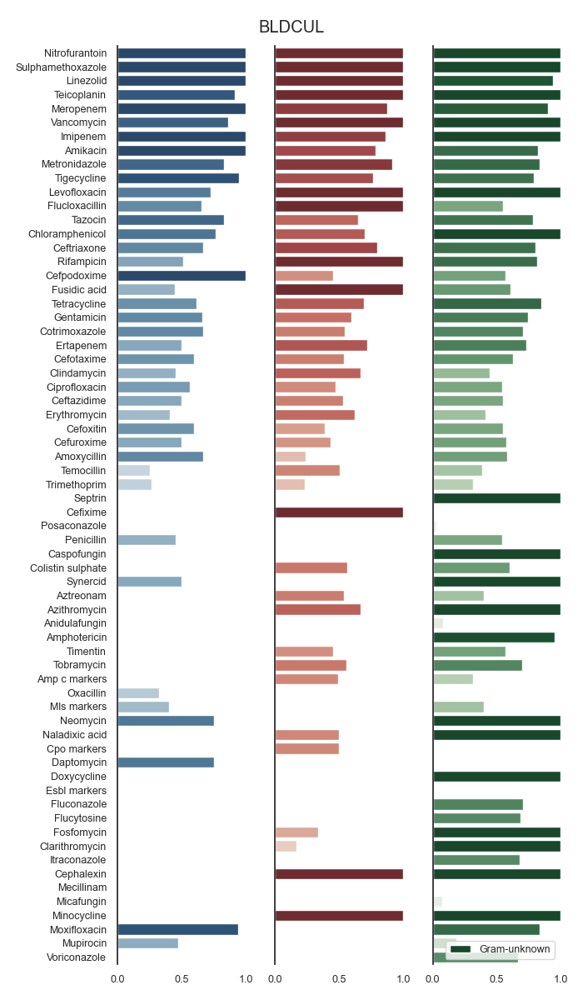
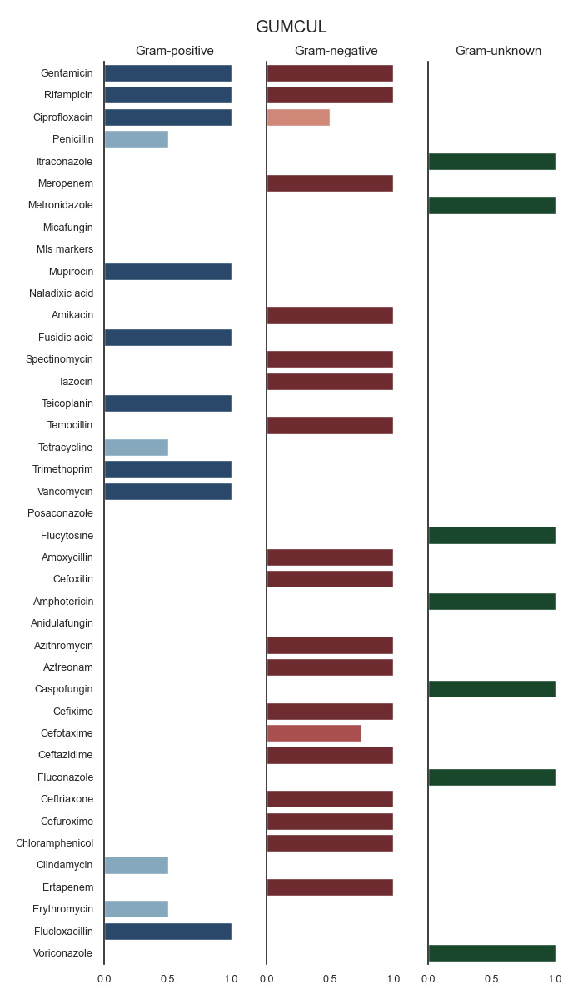
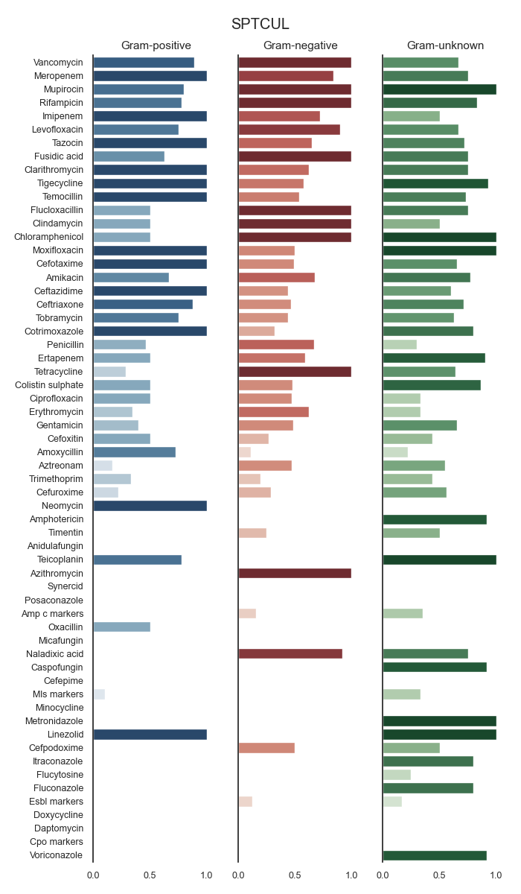
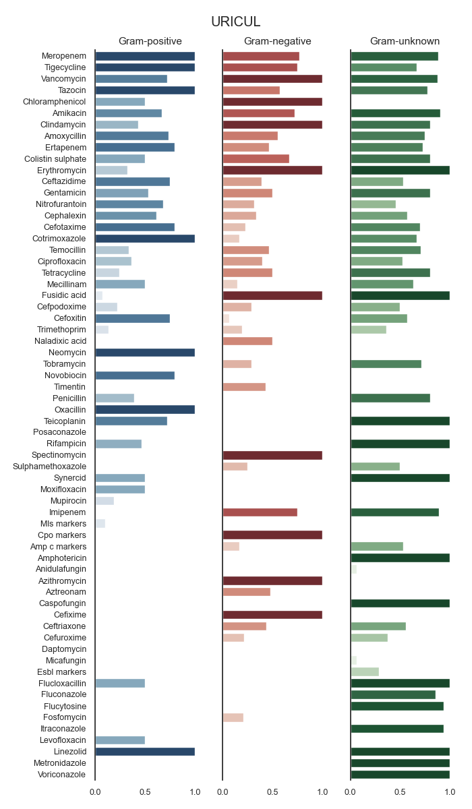
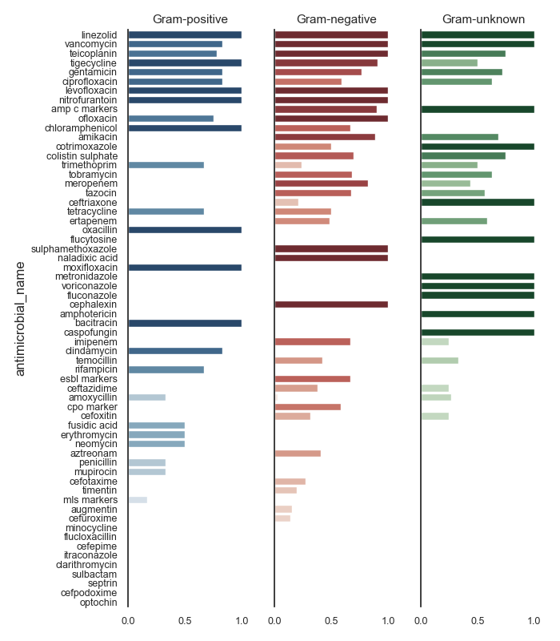

Note
Click here to download the full example code
SART - Spectrum (multiple)¶
- 
- 
- 
- 
- 
Out:
SARI (overall):
sensitivity P intermediate resistant sensitive freq sari
specimen_code microorganism_name antimicrobial_name
ABSCESS Achromobacter species Cefepime 0.0 0.0 1.0 0.0 1.0 1.0000
Ceftazidime 0.0 1.0 0.0 0.0 1.0 1.0000
Ceftriaxone 0.0 0.0 1.0 0.0 1.0 1.0000
Ciprofloxacin 0.0 0.0 0.0 1.0 1.0 0.0000
Gentamicin 0.0 1.0 0.0 0.0 1.0 1.0000
... ... ... ... ... ... ...
URINE Viridans streptococci Clindamycin 0.0 2.0 0.0 8.0 10.0 0.2000
Erythromycin 0.0 0.0 4.0 6.0 10.0 0.4000
Levofloxacin 0.0 0.0 0.0 1.0 1.0 0.0000
Penicillin g 0.0 2.0 0.0 9.0 11.0 0.1818
Vancomycin 0.0 0.0 0.0 11.0 11.0 0.0000
[5030 rows x 6 columns]
0 0.0
1 0.0
2 0.0
3 0.0
4 0.0
...
5025 0.0
5026 0.0
5027 0.0
5028 0.0
5029 0.0
Name: P, Length: 5030, dtype: float64
specimen_code object
microorganism_name object
antimicrobial_name object
P float64
intermediate float64
resistant float64
sensitive float64
freq float64
sari float64
genus object
species object
domain object
phylum object
class object
order object
family object
acronym object
gram_stain object
exists_in_registry bool
dtype: object
c:\users\kelda\desktop\repositories\github\pyamr\main\pyamr\core\asai.py:468: UserWarning:
Extreme resistances were found in the DataFrame. These rows
should be reviewed since these resistances might correspond
to pairs with low number of records.
c:\users\kelda\desktop\repositories\github\pyamr\main\pyamr\core\asai.py:479: UserWarning:
There are NULL values in columns that are required. These
rows will be ignored to safely compute ASAI. Please review
the DataFrame and address this inconsistencies. See below
for more information:
specimen_code 0
antimicrobial_name 0
gram_stain 0
GENUS 0
SPECIE 52
RESISTANCE 0
ASAI (overall):
N_GENUS N_SPECIE ASAI_SCORE width gmean
gram_stain n p u n p u n p u
specimen_code antimicrobial_name
ABSCESS Amikacin 7.0 NaN 2.0 9.0 NaN 2.0 0.9286 NaN 0.0000 0.9286 0.0000
Ampicillin 4.0 3.0 2.0 6.0 8.0 2.0 0.3750 0.6944 0.5000 1.5694 0.3608
Ampicillin/sulbactam 5.0 NaN 1.0 7.0 NaN 1.0 0.8000 NaN 1.0000 1.8000 0.8944
Cefazolin 4.0 NaN 2.0 6.0 NaN 2.0 0.6250 NaN 0.5000 1.1250 0.5590
Cefepime 17.0 NaN 4.0 22.0 NaN 4.0 0.9000 NaN 0.7500 1.6500 0.8216
... ... ... ... ... ... ... ... ... ... ... ...
URINE Rifampin 1.0 2.0 1.0 1.0 2.0 1.0 1.0000 0.5000 1.0000 2.5000 0.7071
Tetracycline 8.0 4.0 6.0 11.0 15.0 7.0 0.4375 0.8333 0.6667 1.9375 0.4930
Tobramycin 20.0 1.0 4.0 50.0 1.0 5.0 0.7933 0.0000 0.7500 1.5433 0.0000
Trimethoprim/sulfa 24.0 4.0 7.0 58.0 6.0 9.0 0.9583 0.6250 0.9286 2.5119 0.7458
Vancomycin NaN 5.0 6.0 NaN 20.0 7.0 NaN 0.9000 1.0000 1.9000 0.9487
[133 rows x 11 columns]
ASAI (ABSCESS)
specimen_code antimicrobial_name N_GENUS N_SPECIE ASAI_SCORE width gmean
gram_stain n p u n p u n p u
14 ABSCESS Levofloxacin 13.0 3.0 8.0 12.0 10.0 7.0 1.0000 1.0000 1.0000 3.0000 1.0000
16 ABSCESS Meropenem 18.0 1.0 4.0 23.0 1.0 4.0 0.8778 1.0000 1.0000 2.8778 0.9369
12 ABSCESS Gentamicin 16.0 3.0 6.0 21.0 6.0 6.0 0.9062 1.0000 0.8333 2.7396 0.8690
24 ABSCESS Trimethoprim/sulfa 22.0 2.0 8.0 28.0 2.0 7.0 0.9886 1.0000 0.7500 2.7386 0.8611
20 ABSCESS Piperacillin/tazo 17.0 2.0 6.0 21.0 2.0 6.0 0.9412 1.0000 0.6667 2.6078 0.7921
6 ABSCESS Ceftriaxone 16.0 2.0 7.0 23.0 8.0 9.0 0.8781 0.5000 0.8571 2.2353 0.6135
18 ABSCESS Penicillin g 1.0 6.0 8.0 1.0 17.0 10.0 1.0000 0.6042 0.6250 2.2292 0.6145
9 ABSCESS Clindamycin 1.0 4.0 8.0 1.0 14.0 10.0 1.0000 0.6161 0.5833 2.1994 0.5995
22 ABSCESS Tetracycline 3.0 3.0 2.0 4.0 8.0 2.0 0.3333 0.8333 1.0000 2.1667 0.5270
7 ABSCESS Cefuroxime 3.0 1.0 NaN 4.0 1.0 NaN 1.0000 1.0000 NaN 2.0000 1.0000
10 ABSCESS Daptomycin NaN 1.0 3.0 NaN 2.0 3.0 NaN 1.0000 1.0000 2.0000 1.0000
15 ABSCESS Linezolid NaN 2.0 2.0 NaN 5.0 2.0 NaN 1.0000 1.0000 2.0000 1.0000
13 ABSCESS Imipenem 9.0 NaN 3.0 8.0 NaN 3.0 0.8889 NaN 1.0000 1.8889 0.9428
25 ABSCESS Vancomycin NaN 4.0 7.0 NaN 18.0 9.0 NaN 0.8750 1.0000 1.8750 0.9354
2 ABSCESS Ampicillin/sulbactam 5.0 NaN 1.0 7.0 NaN 1.0 0.8000 NaN 1.0000 1.8000 0.8944
8 ABSCESS Ciprofloxacin 18.0 2.0 5.0 23.0 3.0 5.0 0.8778 0.2500 0.6000 1.7278 0.3629
23 ABSCESS Tobramycin 14.0 NaN 4.0 20.0 NaN 4.0 0.9464 NaN 0.7500 1.6964 0.8425
4 ABSCESS Cefepime 17.0 NaN 4.0 22.0 NaN 4.0 0.9000 NaN 0.7500 1.6500 0.8216
1 ABSCESS Ampicillin 4.0 3.0 2.0 6.0 8.0 2.0 0.3750 0.6944 0.5000 1.5694 0.3608
5 ABSCESS Ceftazidime 18.0 NaN 4.0 23.0 NaN 4.0 0.7944 NaN 0.7500 1.5444 0.7719
21 ABSCESS Rifampin NaN 2.0 2.0 NaN 4.0 2.0 NaN 0.3333 1.0000 1.3333 0.5774
19 ABSCESS Piperacillin 8.0 NaN 2.0 10.0 NaN 2.0 0.7812 NaN 0.5000 1.2812 0.6250
17 ABSCESS Oxacillin NaN 1.0 2.0 NaN 4.0 2.0 NaN 0.7500 0.5000 1.2500 0.6124
3 ABSCESS Cefazolin 4.0 NaN 2.0 6.0 NaN 2.0 0.6250 NaN 0.5000 1.1250 0.5590
11 ABSCESS Erythromycin NaN 3.0 6.0 NaN 13.0 8.0 NaN 0.7500 0.2778 1.0278 0.4564
0 ABSCESS Amikacin 7.0 NaN 2.0 9.0 NaN 2.0 0.9286 NaN 0.0000 0.9286 0.0000
ASAI (BLOOD CULTURE)
specimen_code antimicrobial_name N_GENUS N_SPECIE ASAI_SCORE width gmean
gram_stain n p u n p u n p u
39 BLOOD CULTURE Imipenem 14.0 2.0 7.0 28.0 2.0 7.0 0.9762 1.0000 0.8571 2.8333 0.9147
48 BLOOD CULTURE Rifampin 1.0 3.0 4.0 1.0 14.0 4.0 1.0000 0.8333 1.0000 2.8333 0.9129
35 BLOOD CULTURE Clindamycin 5.0 10.0 12.0 6.0 53.0 17.0 1.0000 0.7795 1.0000 2.7795 0.8829
40 BLOOD CULTURE Levofloxacin 24.0 5.0 17.0 49.0 30.0 19.0 0.9940 0.8765 0.8039 2.6744 0.8369
51 BLOOD CULTURE Trimethoprim/sulfa 30.0 7.0 13.0 68.0 14.0 13.0 0.9294 0.8163 0.8462 2.5918 0.8012
38 BLOOD CULTURE Gentamicin 24.0 4.0 13.0 56.0 22.0 14.0 0.7917 1.0000 0.7692 2.5609 0.7804
47 BLOOD CULTURE Piperacillin/tazo 25.0 1.0 11.0 55.0 4.0 12.0 0.8700 1.0000 0.6364 2.5064 0.7441
43 BLOOD CULTURE Nitrofurantoin 2.0 1.0 1.0 2.0 1.0 1.0 0.5000 1.0000 1.0000 2.5000 0.7071
32 BLOOD CULTURE Ceftriaxone 28.0 6.0 17.0 60.0 28.0 20.0 0.8231 0.6944 0.8922 2.4097 0.7141
31 BLOOD CULTURE Ceftazidime 24.0 1.0 10.0 58.0 1.0 11.0 0.7718 1.0000 0.6000 2.3718 0.6805
34 BLOOD CULTURE Ciprofloxacin 27.0 4.0 15.0 60.0 7.0 15.0 0.8651 0.6875 0.8000 2.3526 0.6898
42 BLOOD CULTURE Meropenem 25.0 4.0 13.0 59.0 7.0 12.0 0.9867 0.5000 0.8077 2.2944 0.6312
37 BLOOD CULTURE Erythromycin 1.0 8.0 9.0 1.0 46.0 11.0 1.0000 0.5483 0.5556 2.1038 0.5519
36 BLOOD CULTURE Daptomycin NaN 5.0 4.0 NaN 24.0 5.0 NaN 1.0000 1.0000 2.0000 1.0000
41 BLOOD CULTURE Linezolid NaN 6.0 4.0 NaN 17.0 5.0 NaN 1.0000 1.0000 2.0000 1.0000
45 BLOOD CULTURE Penicillin g 4.0 13.0 14.0 4.0 53.0 20.0 0.5000 0.7647 0.6190 1.8837 0.4865
27 BLOOD CULTURE Ampicillin 12.0 6.0 8.0 18.0 13.0 8.0 0.4583 0.7963 0.6250 1.8796 0.4776
49 BLOOD CULTURE Tetracycline 9.0 6.0 7.0 12.0 18.0 7.0 0.3889 0.6319 0.8571 1.8780 0.4590
52 BLOOD CULTURE Vancomycin NaN 9.0 9.0 NaN 59.0 11.0 NaN 0.8519 1.0000 1.8519 0.9230
30 BLOOD CULTURE Cefepime 23.0 NaN 13.0 55.0 NaN 13.0 0.8054 NaN 0.8077 1.6131 0.8065
28 BLOOD CULTURE Ampicillin/sulbactam 9.0 1.0 NaN 19.0 1.0 NaN 0.5926 1.0000 NaN 1.5926 0.7698
29 BLOOD CULTURE Cefazolin 8.0 NaN 1.0 12.0 NaN 1.0 0.5000 NaN 1.0000 1.5000 0.7071
50 BLOOD CULTURE Tobramycin 22.0 NaN 10.0 53.0 NaN 11.0 0.7273 NaN 0.6000 1.3273 0.6606
44 BLOOD CULTURE Oxacillin NaN 2.0 2.0 NaN 18.0 2.0 NaN 0.8235 0.5000 1.3235 0.6417
26 BLOOD CULTURE Amikacin 19.0 NaN 10.0 30.0 NaN 9.0 0.7982 NaN 0.5000 1.2982 0.6318
46 BLOOD CULTURE Piperacillin 15.0 NaN 4.0 26.0 NaN 4.0 0.7778 NaN 0.5000 1.2778 0.6236
33 BLOOD CULTURE Cefuroxime 6.0 NaN NaN 9.0 NaN NaN 1.0000 NaN NaN 1.0000 1.0000
ASAI (SWAB)
specimen_code antimicrobial_name N_GENUS N_SPECIE ASAI_SCORE width gmean
gram_stain n p u n p u n p u
75 SWAB Rifampin 1.0 2.0 3.0 1.0 8.0 3.0 1.0000 1.0000 1.0000 3.0000 1.0000
65 SWAB Gentamicin 17.0 3.0 11.0 38.0 11.0 12.0 0.8824 0.8611 1.0000 2.7435 0.8717
67 SWAB Levofloxacin 17.0 5.0 9.0 29.0 14.0 10.0 0.8824 0.9429 0.8889 2.7141 0.8599
59 SWAB Ceftriaxone 21.0 1.0 8.0 40.0 4.0 11.0 0.8095 1.0000 0.8750 2.6845 0.8416
78 SWAB Trimethoprim/sulfa 23.0 4.0 10.0 46.0 8.0 11.0 0.9239 0.6667 0.9000 2.4906 0.7445
76 SWAB Tetracycline 7.0 4.0 7.0 8.0 13.0 7.0 0.6429 0.7812 0.8571 2.2812 0.6561
54 SWAB Ampicillin 7.0 3.0 1.0 14.0 6.0 1.0 0.5714 0.5833 1.0000 2.1548 0.5774
61 SWAB Ciprofloxacin 17.0 3.0 8.0 39.0 4.0 9.0 0.8775 0.3333 0.8750 2.0858 0.5059
63 SWAB Daptomycin NaN 3.0 2.0 NaN 8.0 2.0 NaN 1.0000 1.0000 2.0000 1.0000
68 SWAB Linezolid NaN 4.0 3.0 NaN 8.0 3.0 NaN 1.0000 1.0000 2.0000 1.0000
74 SWAB Piperacillin/tazo 17.0 NaN 4.0 38.0 NaN 5.0 1.0000 NaN 1.0000 2.0000 1.0000
69 SWAB Meropenem 18.0 1.0 7.0 41.0 1.0 8.0 0.9259 0.0000 1.0000 1.9259 0.0000
73 SWAB Piperacillin 11.0 NaN 1.0 18.0 NaN 1.0 0.9091 NaN 1.0000 1.9091 0.9535
79 SWAB Vancomycin NaN 5.0 7.0 NaN 23.0 10.0 NaN 0.8800 1.0000 1.8800 0.9381
53 SWAB Amikacin 13.0 NaN 1.0 21.0 NaN 1.0 0.8654 NaN 1.0000 1.8654 0.9303
77 SWAB Tobramycin 17.0 1.0 7.0 37.0 1.0 8.0 0.8235 0.0000 1.0000 1.8235 0.0000
66 SWAB Imipenem 11.0 NaN 2.0 22.0 NaN 3.0 0.8182 NaN 1.0000 1.8182 0.9045
57 SWAB Cefepime 17.0 NaN 6.0 39.0 NaN 7.0 0.8039 NaN 1.0000 1.8039 0.8966
56 SWAB Cefazolin 6.0 NaN 1.0 12.0 NaN 1.0 0.7000 NaN 1.0000 1.7000 0.8367
58 SWAB Ceftazidime 19.0 NaN 7.0 42.0 NaN 8.0 0.8377 NaN 0.7143 1.5520 0.7735
55 SWAB Ampicillin/sulbactam 8.0 NaN 2.0 18.0 NaN 2.0 0.5208 NaN 1.0000 1.5208 0.7217
70 SWAB Nitrofurantoin 2.0 NaN 2.0 2.0 NaN 2.0 1.0000 NaN 0.5000 1.5000 0.7071
72 SWAB Penicillin g NaN 5.0 6.0 NaN 15.0 9.0 NaN 0.8000 0.3333 1.1333 0.5164
62 SWAB Clindamycin 1.0 5.0 6.0 1.0 16.0 10.0 0.0000 0.4850 0.5833 1.0683 0.0000
71 SWAB Oxacillin NaN 1.0 4.0 NaN 8.0 4.0 NaN 0.5000 0.5000 1.0000 0.5000
60 SWAB Cefuroxime 5.0 NaN NaN 7.0 NaN NaN 0.9000 NaN NaN 0.9000 0.9487
64 SWAB Erythromycin NaN 3.0 7.0 NaN 17.0 11.0 NaN 0.3889 0.0714 0.4603 0.1667
ASAI (TISSUE)
specimen_code antimicrobial_name N_GENUS N_SPECIE ASAI_SCORE width gmean
gram_stain n p u n p u n p u
92 TISSUE Gentamicin 16.0 4.0 3.0 33.0 13.0 3.0 0.9375 0.9750 1.0000 2.9125 0.9561
94 TISSUE Levofloxacin 11.0 4.0 6.0 16.0 17.0 8.0 0.8636 0.8375 1.0000 2.7011 0.8505
89 TISSUE Clindamycin 1.0 5.0 5.0 1.0 17.0 8.0 1.0000 0.7000 0.9500 2.6500 0.8155
104 TISSUE Trimethoprim/sulfa 20.0 3.0 4.0 33.0 6.0 4.0 0.9375 0.5556 1.0000 2.4931 0.7217
88 TISSUE Ciprofloxacin 16.0 3.0 3.0 33.0 5.0 3.0 0.7750 0.6667 1.0000 2.4417 0.7188
81 TISSUE Ampicillin 7.0 3.0 2.0 9.0 7.0 2.0 0.4762 0.9333 1.0000 2.4095 0.6667
86 TISSUE Ceftriaxone 19.0 3.0 5.0 28.0 9.0 8.0 0.8684 0.6667 0.8000 2.3351 0.6806
102 TISSUE Tetracycline 3.0 5.0 5.0 3.0 17.0 5.0 0.6667 0.8267 0.8000 2.2933 0.6640
96 TISSUE Meropenem 16.0 3.0 3.0 32.0 4.0 3.0 0.9271 0.6667 0.6667 2.2604 0.6419
95 TISSUE Linezolid NaN 4.0 3.0 NaN 8.0 3.0 NaN 1.0000 1.0000 2.0000 1.0000
101 TISSUE Rifampin NaN 3.0 2.0 NaN 10.0 2.0 NaN 1.0000 1.0000 2.0000 1.0000
90 TISSUE Daptomycin NaN 3.0 4.0 NaN 8.0 4.0 NaN 1.0000 1.0000 2.0000 1.0000
93 TISSUE Imipenem 11.0 NaN 2.0 14.0 NaN 2.0 0.9697 NaN 1.0000 1.9697 0.9847
85 TISSUE Ceftazidime 17.0 NaN 1.0 34.0 NaN 1.0 0.9471 NaN 1.0000 1.9471 0.9732
103 TISSUE Tobramycin 16.0 NaN 1.0 33.0 NaN 1.0 0.9375 NaN 1.0000 1.9375 0.9682
105 TISSUE Vancomycin NaN 5.0 5.0 NaN 23.0 8.0 NaN 0.9200 1.0000 1.9200 0.9592
100 TISSUE Piperacillin/tazo 16.0 NaN 1.0 31.0 NaN 1.0 0.8594 NaN 1.0000 1.8594 0.9270
99 TISSUE Piperacillin 7.0 NaN 1.0 9.0 NaN 1.0 0.7857 NaN 1.0000 1.7857 0.8864
80 TISSUE Amikacin 11.0 NaN 1.0 12.0 NaN 1.0 0.7273 NaN 1.0000 1.7273 0.8528
84 TISSUE Cefepime 16.0 NaN 2.0 33.0 NaN 2.0 0.8344 NaN 0.5000 1.3344 0.6459
98 TISSUE Penicillin g NaN 6.0 5.0 NaN 16.0 8.0 NaN 0.8000 0.4000 1.2000 0.5657
87 TISSUE Cefuroxime 4.0 NaN NaN 5.0 NaN NaN 1.0000 NaN NaN 1.0000 1.0000
97 TISSUE Oxacillin NaN 1.0 2.0 NaN 10.0 2.0 NaN 0.3000 0.5000 0.8000 0.3873
91 TISSUE Erythromycin NaN 3.0 5.0 NaN 17.0 8.0 NaN 0.3556 0.3500 0.7056 0.3528
82 TISSUE Ampicillin/sulbactam 6.0 NaN NaN 14.0 NaN NaN 0.5778 NaN NaN 0.5778 0.7601
83 TISSUE Cefazolin 4.0 NaN 1.0 8.0 NaN 1.0 0.3750 NaN 0.0000 0.3750 0.0000
ASAI (URINE)
specimen_code antimicrobial_name N_GENUS N_SPECIE ASAI_SCORE width gmean
gram_stain n p u n p u n p u
116 URINE Daptomycin 1.0 2.0 2.0 1.0 5.0 2.0 1.0000 1.0000 1.0000 3.0000 1.0000
119 URINE Imipenem 15.0 1.0 2.0 28.0 1.0 2.0 0.9200 1.0000 1.0000 2.9200 0.9592
122 URINE Meropenem 21.0 1.0 4.0 52.0 1.0 5.0 0.9524 1.0000 0.7500 2.7024 0.8452
127 URINE Piperacillin/tazo 20.0 1.0 3.0 48.0 1.0 3.0 0.9400 1.0000 0.6667 2.6067 0.7916
114 URINE Ciprofloxacin 22.0 4.0 6.0 52.0 7.0 7.0 0.7909 0.7917 1.0000 2.5826 0.7913
131 URINE Trimethoprim/sulfa 24.0 4.0 7.0 58.0 6.0 9.0 0.9583 0.6250 0.9286 2.5119 0.7458
128 URINE Rifampin 1.0 2.0 1.0 1.0 2.0 1.0 1.0000 0.5000 1.0000 2.5000 0.7071
120 URINE Levofloxacin 21.0 4.0 8.0 38.0 12.0 10.0 0.8857 0.8452 0.7500 2.4810 0.7493
111 URINE Ceftazidime 22.0 1.0 4.0 53.0 1.0 5.0 0.7114 1.0000 0.7500 2.4614 0.7304
112 URINE Ceftriaxone 22.0 3.0 6.0 53.0 5.0 7.0 0.7818 0.8333 0.8333 2.4485 0.7368
118 URINE Gentamicin 20.0 4.0 7.0 50.0 11.0 10.0 0.7933 0.7500 0.8571 2.4005 0.7141
123 URINE Nitrofurantoin 14.0 2.0 5.0 37.0 13.0 7.0 0.6071 0.9167 0.8000 2.3238 0.6673
115 URINE Clindamycin 1.0 4.0 6.0 1.0 6.0 7.0 1.0000 0.5000 0.5000 2.0000 0.5000
121 URINE Linezolid NaN 2.0 2.0 NaN 6.0 2.0 NaN 1.0000 1.0000 2.0000 1.0000
107 URINE Ampicillin 12.0 3.0 6.0 22.0 8.0 6.0 0.3750 0.9444 0.6667 1.9861 0.4859
129 URINE Tetracycline 8.0 4.0 6.0 11.0 15.0 7.0 0.4375 0.8333 0.6667 1.9375 0.4930
132 URINE Vancomycin NaN 5.0 6.0 NaN 20.0 7.0 NaN 0.9000 1.0000 1.9000 0.9487
110 URINE Cefepime 20.0 2.0 5.0 50.0 2.0 6.0 0.7800 0.0000 0.8000 1.5800 0.0000
126 URINE Piperacillin 14.0 NaN 2.0 25.0 NaN 3.0 0.8095 NaN 0.7500 1.5595 0.7792
130 URINE Tobramycin 20.0 1.0 4.0 50.0 1.0 5.0 0.7933 0.0000 0.7500 1.5433 0.0000
125 URINE Penicillin g NaN 5.0 5.0 NaN 12.0 6.0 NaN 0.9333 0.6000 1.5333 0.7483
109 URINE Cefazolin 12.0 NaN 2.0 23.0 NaN 2.0 0.3972 NaN 1.0000 1.3972 0.6303
108 URINE Ampicillin/sulbactam 13.0 1.0 3.0 26.0 1.0 3.0 0.6000 0.0000 0.6667 1.2667 0.0000
124 URINE Oxacillin NaN 1.0 4.0 NaN 7.0 5.0 NaN 0.4286 0.7500 1.1786 0.5669
117 URINE Erythromycin NaN 4.0 6.0 NaN 7.0 7.0 NaN 0.4167 0.5000 0.9167 0.4564
113 URINE Cefuroxime 5.0 NaN 1.0 8.0 NaN 1.0 0.8000 NaN 0.0000 0.8000 0.0000
106 URINE Amikacin 16.0 1.0 2.0 29.0 1.0 2.0 0.6719 0.0000 0.0000 0.6719 0.0000
8 9 10 11 12 13 14 15 16 17 18 19 20 21 22 23 24 25 26 27 28 29 30 31 32 33 34 35 36 37 38 39 40 41 42 43 44 45 46 47 48 49 50 51 52 53 54 55 56 57 58 59 60 61 62 63 64 65 66 67 68 69 70 71 72 73 74 75 76 77 78 79 80 81 82 83 84 85 86 87 88 89 90 91 92 93 94 95 96 97 98 99 100 101 102 103 104 105 106 107 108 109 110 111 112 113 114 115 116 117 118 119 120 121 122 123 124 125 126 127 128 129 130 131 132 133 134 135 136 137 138 139 140 141 142 143 144 145 146 147 148 149 150 151 152 153 154 155 156 157 158 159 160 161 162 163 164 165 166 167 168 169 170 171 172 173 174 175 176 177 178 179 180 181 182 183 184 185 186 187 188 189 190 191 192 193 194 195 196 197 198 199 200 201 202 | import sys
import glob
import numpy as np
import pandas as pd
import seaborn as sns
import matplotlib as mpl
import matplotlib.pyplot as plt
# Import specific libraries
from pyamr.core.sari import SARI
from pyamr.core.asai import ASAI
from pyamr.datasets.load import load_data_mimic
from pyamr.datasets.registries import MicroorganismRegistry
from pyamr.utils.plot import scalar_colormap
# Configure seaborn style (context=talk)
sns.set(style="white")
# Set matplotlib
mpl.rcParams['xtick.labelsize'] = 9
mpl.rcParams['ytick.labelsize'] = 9
mpl.rcParams['axes.titlesize'] = 11
mpl.rcParams['legend.fontsize'] = 9
# Pandas configuration
pd.set_option('display.max_colwidth', 40)
pd.set_option('display.width', 300)
pd.set_option('display.precision', 4)
# Numpy configuration
np.set_printoptions(precision=2)
# --------------------------------------------------------------------
# Main
# --------------------------------------------------------------------
# Load data
data, antibiotics, organisms = load_data_mimic()
# Count records per specimen code
specimen_code_count = data \
.specimen_code.value_counts(normalize=True) \
.sort_values(ascending=False)
# Filter most frequent specimens
data = data[data.specimen_code.isin( \
specimen_code_count.index.values[:5])]
# -------------------
# Compute SARI
# -------------------
# Create sari instance
sari = SARI(groupby=['specimen_code',
'microorganism_name',
'antimicrobial_name',
'sensitivity'])
# Compute SARI overall
sari_overall = sari.compute(data,
return_frequencies=True)
# Show
print("SARI (overall):")
print(sari_overall)
# ------------------------------
# Include registry information
# ------------------------------
# Load registry
mreg = MicroorganismRegistry()
# Format sari dataframe
dataframe = sari_overall.copy(deep=True)
dataframe = dataframe.reset_index()
# Create genus and species
dataframe[['genus', 'species']] = \
dataframe.microorganism_name \
.str.capitalize() \
.str.split(expand=True, n=1)
# Combine with registry information
dataframe = mreg.combine(dataframe)
# Fill missing gram stain
dataframe.gram_stain = dataframe.gram_stain.fillna('u')
print(dataframe.P)
print(dataframe.dtypes)
# -------------------------------
# Compute ASAI
# -------------------------------
# Create asai instance
asai = ASAI(column_genus='genus',
column_specie='species',
column_resistance='sari',
column_frequency='freq')
# Compute
scores = asai.compute(dataframe,
groupby=['specimen_code',
'antimicrobial_name',
'gram_stain'],
weights='uniform',
threshold=0.5,
min_freq=0)
# Stack
scores = scores.unstack()
# .. note: In order to sort the scores we need to compute metrics
# that combine the different subcategories (e.g. gram-negative
# and gram-positive). Two possible options are: (i) use the
# gmean or (ii) the width.
# Measures
scores['width'] = np.abs(scores['ASAI_SCORE'].sum(axis=1))
scores['gmean'] = np.sqrt(scores['ASAI_SCORE'].product(axis=1))
# Show
print("\nASAI (overall):")
print(scores)
# -------------------------------------------
# Plot
# -------------------------------------------
# Reset
scores = scores.reset_index()
# Loop
for specimen, df in scores.groupby(by='specimen_code'):
# Sort
df = df.sort_values(by='width', ascending=False)
# Show
print("\n\nASAI (%s)" % specimen)
print(df)
# Variables to plot.
x = df.antimicrobial_name
y_n = df['ASAI_SCORE']['n'].values
y_p = df['ASAI_SCORE']['p'].values
y_u = df['ASAI_SCORE']['u'].values
# Constants
colormap_p = scalar_colormap(y_p, cmap='Blues', vmin=-0.1, vmax=1.1)
colormap_n = scalar_colormap(y_n, cmap='Reds', vmin=-0.1, vmax=1.1)
colormap_u = scalar_colormap(y_u, cmap='Greens', vmin=-0.1, vmax=1.1)
# ----------
# Example
# ----------
# This example shows an stacked figure using more than two categories.
# For instance, it uses gram-positive, gram-negative and gram-unknown.
# All theindexes go within the range [0,1].
# Create the figure
f, axes = plt.subplots(1, 3, figsize=(7, 8))
# Plot each category
sns.barplot(x=y_p, y=x, palette=colormap_p, ax=axes[0], orient='h',
saturation=0.5, label='Gram-positive')
sns.barplot(x=y_n, y=x, palette=colormap_n, ax=axes[1], orient='h',
saturation=0.5, label='Gram-negative')
sns.barplot(x=y_u, y=x, palette=colormap_u, ax=axes[2], orient='h',
saturation=0.5, label='Gram-unknown')
# Configure
sns.despine(bottom=True)
# Format figure
plt.subplots_adjust(wspace=0.0, hspace=0.0)
# Remove yticks
axes[1].set_yticks([])
axes[2].set_yticks([])
# Set title
axes[0].set_title('Gram-positive')
axes[1].set_title('Gram-negative')
axes[2].set_title('Gram-unknown')
# Set x-axis
axes[0].set_xlim([0, 1.1])
axes[1].set_xlim([0, 1.1])
axes[2].set_xlim([0, 1.1])
# Remove ylabels
axes[1].set_ylabel('')
axes[2].set_ylabel('')
# Adjust
plt.tight_layout()
# Show
plt.show()
|
Total running time of the script: ( 0 minutes 6.749 seconds)